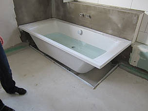

Modellierung Architektenprogramm
20130914 Versorgeranschlüsse
20130927 Fundament
20131003 Bodenplatte
20131012 Mauerwerk 1. Stock
20131020 Deckenplatte und Mauerwerk 2. Stock
20131102 Der zweite Stock von oben
20131110 Das Haus mit Dachstuhl von Außen
20131110 Das Haus mit Dachstuhl von Innen
20131118 Das Dach ist zu und mit Ziegeln gedeckt

20131214 Fenster und Türen sind eingebaut
20140104 Der MSPA ist angeschlossen
20140104 Die Isolierung zum Dachstuhl ist fertig
20140201 Die Dachlatten können gestrichen werden
20140201 Die Elektrik ist großteils verlegt
20140201 Wasseranschluss Küche an der falschen Stelle

20140201 Wasseranschluss Bad, Badewanne
20140201 Falsche Höhe und Befestigung vom Waschtisch
20140201 Abwasserschacht an der richtigen Stelle
20140208 Regenrinnenabfluss leider nicht korrekt
20140215 Wasseranschluss Küche korrigiert
20140215 Fußbodenheizung verlegt Wohnbereich EG
20140215 Fußbodenheizung verlegt Verteilerkasten OG
20140221 Estrich im Haus
20140221 Isolierung an den Außenwänden
Ursprünglich wollten wir ja gar kein Haus bauen, sondern ein gebrauchtes kaufen. Da wir jedoch innerhalb von 2 Jahren keine passende Immobilie in der gewünschten Region finden konnten (oder diese vom Preis her einem Neubau entsprachen), entschieden wir uns um.
1. Das Grundstück (6 Monate)
Unabhängig vom Bau an sich, muss man zunächst einmal ein Grundstück erwerben. Das erwies sich fast genauso schwer wie eine gebrauchte Immobilie zu kaufen, die zu einem passt. Nach einem halben Jahr wurden wir jedoch fündig. Von der Immobilienauswahl am 22.12.2012 an, dauerte es sage und schreibe genau 6 Monate, bis wir am 22.06.2013 im Grundbuch inkl. Grundschuldeintragung für Grundstück und Haus eingeschrieben wurden. Die Nebenkosten betrafen ziemlich genau 10 Prozent.
2. Die Hausfirma
Direkt nach Auswahl des Grundstücks ging es an die Aussondierung der Hausbaufirmen. Ursprünglich wollten wir immer mit Schwörer bauen. Doch entschieden wir uns wg. Themen wie Elektrosmogbelastung, Schallschutz und Wandaufhängungen dann doch für ein Massivhaus und gegen ein Holzfertighaus. Aufgrund der Erfahrung, Qualität, Bewertung und letztlich des Preises entschieden wir uns für einen Lizenznehmer der Firma Town & Country aus unserer Region "Dürr Massivhaus".
3. Der Haustyp
Von Anfang an wollten wir ein zweistöckiges Haus mit Keller bauen. Jedoch stellte sich durch das Bodengutachten heraus (bei Town & Country immer inklusive), dass der Grundwasserspiegel auf unserem Grundstück sehr hoch ist, wodurch der Keller stets im Wasser stehen müsste. Wir hätten zwar einen WU-Beton-Keller bauen können, der das theoretisch auch auf Dauer aushalten kann, wollten uns aufgrund dessen aber trotzdem umentscheiden. Dies war glücklicherweise denklich einfach. Der alte Hausvertrag wurde ungültig erklärt und ein neuer Haustyp ausgesucht (vom Stadthaus Flair 124 mit Keller zur Stadtvilla 145 ohne Keller).
4. Die Hauskonfiguration
Die Konfiguration des Hauses gestaltete sich recht langwierig. Hätten wir uns mit dem Standardplan abgefunden, wäre dieser Schritt natürlich schnell durch gewesen, so allerdings dauerte es einige Architektenpläne, bis wir zufrieden waren. Schließlich stand die Planung für das Baugesuch fest und wurde beim Bauamt eingereicht. Das Bauamt an sich war grandios schnell und bearbeitete die Angelegenheit innerhalb von drei Tagen. Danach musste das Ganze aber noch zum Landratsamt. Hier war der Status des Baugesuchs (Online-Abfrage) 4 Wochen auf "eingegangen". Ohne Zwischenstatus ging dieser dann auf einmal in "genehmigt" über. Da dies ein Kenntnisgabeverfahren war und bei Genehmigung nach 4 Wochen der Einreichung der Bau beginnen kann, war der Bau ab Genehmigung theoretisch schon startbar. Doch so schnell geht das Ganze dann natürlich wiederum nicht.
5. Werksplanung
Direkt nach der Einreichung des Baugesuchs startete die Phase der Werksplanung. Hier wurde festgelegt, welche Farbe das Haus haben soll, welche Ziegel auf das Dach kommen, wo genau Fenster hinkommen sollen und in welcher Größe, welche Sanitärgegenstände zum Einsatz kommen sollen... Diese Phase stellte sich als schwerer als gedacht heraus. Nicht aus der Tatsache heraus, dass wir uns nicht entscheiden konnten - daran lag es überhaupt nicht - sondern weil die Standardkonfigurationen teils nicht unserem Geschmack entsprachen. Vor allem bei den Sanitärgegenständen und Fliesen hatten wir so unsere "Probleme". Im Baumarkt oder bei Ikea & Co. können prima Einrichtungsgegenstände, Armaturen oder Fliesen bezogen werden. Doch Achtung: die extern bezogenen Gegenstände werden nicht vom Bauträger verbaut. Diese müssen dann in Eigenleistung selbst oder durch andere Handwerker angebracht werden. Dafür erhält man dann eine minimale Rückerstattung für die im Preis enthaltenen Objekte. Doch kommt man bei "Sonderwünschen" auch auf diesem Weg weit billiger, als bei den Bemusterungshäusern einzukaufen. Identische Armaturen kosten hier nämlich beispielsweise das doppelte wie in renommierten Baumärkten. Zudem bieten Baumärkte wie Hornbach auch einen Handwerker-Service an, der die Gegenstände dann vor Ort montieren kann. Nach viel hin- und her hatten wir dann auch die Werksplanung geschafft.
6. Versorger
Parallel dazu müssen vor dem Baubeginn vom Bauherrn eine Feuer-Rohbauversicherung abgeschlossen und Bauwasser sowie Baustrom beantragt werden. Das ist vor allem bei der EnBw sehr lästig. Manche Abteilungen sind hier sehr fit und bei anderen bekommt man über Wochen hinweg Niemanden ans Telefon und kann lediglich per Fax zu einem Erfolg kommen.
7. Endlich kann der Bau beginnen
Bauwasser und Baustrom stehen seit dem 04.09.2013 zur Verfügung und die Feuer-Rohbauversicherung ist auch ab dem gleichen Tag bestätigt worden. Nach einem Gespräch mit dem Bauleiter am Grundstück, bei dem festgelegt wurde, wo der Kran hingestellt wird und der Erdaushub abgeladen werden kann, sind alle notwendigen Dinge für den Start geklärt. Jetzt kann es wirklich losgehen - wenn da nicht die gewisse Vorlaufzeit/Vorbereitungszeit für die Ausführenden wäre... Und auf einmal hieß es dann noch "und was ist mit dem Baustromkasten?" Wir hatten gedacht, dies wäre mit der Baustrombeantragung erledigt. Aber natürlich nicht. Dies wurde auch vorher in keiner Checkliste erwähnt. Glücklicherweise war das dann auch innerhalb von einer Woche erledigt.
8. Der Bau hat begonnen
Jetzt wird es so richtig lebendig auf der Baustelle. Innerhalb von zwei Wochen waren das Fundament inkl. Abwasserkanälen und der Bodenplatte errichtet. Und nun entstehen die Wände so langsam mit YTONG-Steinen auf bewährter Lego-Bauweise mit versetzten Steinen ;-). Unglücklicherweise haben wir aber bei der Begehung heute (12.10.2013) festgestellt, dass der Abwasserkontrollschacht nicht an der korrekten Stelle sitzt. Dies würde dazu führen, dass die Garage auf dem Kontrollschacht stehen müsste, was 1. nicht erlaubt ist und 2. nicht der Planung entspricht. Wir hoffen, dass das Problem zeitnah und ohne Probleme behoben werden kann. Wir werden uns diesbezüglich am 22.10. auf der Baustelle treffen und das Problem vor Ort bereden. Ansonsten ist jetzt bereits die Deckenplatte des 1. Stockes errichtet und die Wände des 2. Stockes sind bereits hochgezogen (20.10.2013).
9. Der Dachstuhl steht
Heute (10.11.2013) konnte ich auf der Baustelle nun endlich den fertigen Dachstuhl begutachten. Glücklicherweise ist bereits die wasserdichte Folienschicht angebracht, auf die die Latten für die Dachziegel kommen. da seit heute nämlich sehr schlechtes Wetter auf dem Programm steht. Wir hoffen, dass das Haus noch bis zum Winter komplett dicht wird, aber das Wichtigste ist bereits gemacht.
10. Das Haus wird winterfest
Nun (14.12.2013) ist das Haus endlich komplett dicht. Alle Fenster (bis auf das Dachfenster) und Türen wurden nun eingebaut, auch wenn die Ausrichtung noch fehlt. Die Versorger sind jetzt auch komplett ins Haus verlegt worden (Koordination inkl. Tiefbau fürs Wasser über die EnBW). KabelBW, Telekom und Gas wurden auch bereits über den MSPA ins Haus gelegt. Kurz vor Weihnachten hatten wir dann noch die Besprechung mit dem Elektriker. Alle Wünsche und Anregungen wurden hierbei berücksichtigt. Wir freuen uns darauf, wenn es Mitte Januar wieder weiter geht.
11. Der Innenausbau beginnt
Als wir nach Neujahr (04.01.2014) das Haus besichtigten war bereits die Isolierung zum Dachstuhl (Dampfbremse) im OG integriert. Anfang Februar stand dann auch wieder das Gerüst für die spätere Isolierung des Hauses sowie den Einbau von Dachfenster und Regenrinnen. Daher war nun die Zeit gekommen die Dachlatten zu Streichen. Im Vertrag ist standardmäßig nämlich nur eine Grundierung vorgesehen. Gleichzeitig wurden das Dachfenster eingebaut und die Regenrinnen befestigt. Leider hatte hier der Erdbauer wiedermal nicht die Pläne berücksichtigt, wodurch die Regenrinnen aktuell nicht korrekt auf den Abfluss aufgesetzt werden konnten - was aber natürlich noch korrigiert wird. Gleicher Erdbauer hatte aber glücklicherweise mittlerweile den früheren Fehler der falschen Positionierung des Wasserkontrollschachtes nun behoben. Im Haus ging es währenddessen auch kräftig weiter. Die Elektrik wurde verlegt und die Wasserleitungen sowie Sanitärträger eingebaut. Mitte Februar wurde dann bereits die Fußbodenheizung verlegt, obwohl wir noch bzgl. der Elektrik Bedenken hatten, da noch einige Positionen fehlten. Doch nach Absprache sollte das zu späterem Zeitpunkt auch noch sinnvoll machbar sein. Nach abgenommener Fußbodenheizung wurde am 21.02.2014 nun der 6 cm hohe Estrich auf die Fußbodenheizung gegossen. Das heißt: der Innenraum ist jetzt 2-3 Wochen nicht mehr betretbar. Währenddessen kann aber nun bereits die Isolierung ans Haus angebracht werden.
12. Das Haus bekommt seine isolierende Schale
...
Weiterführende Informationen
Wer nun nicht die Lust verloren hat, sein eigenes Haus zu bauen und auch selbst tatkräftig Hand anlegen will, kann sich z.B. in diesem Gratis-E-Book ein paar Informationen für den Kauf vom ensprechenden Equipment im Baumarkt beschaffen: www.baumarkt.net
Ein Tipp am Schluss
Mein Tipp ist auf jeden Fall: wenn genügend Geld vorhanden ist, sollte man sich möglichst nur die Arbeiten heraussuchen, die einem Spaß machen (könnten) und den Rest von (mehr-oder-weniger) Profis machen lassen.